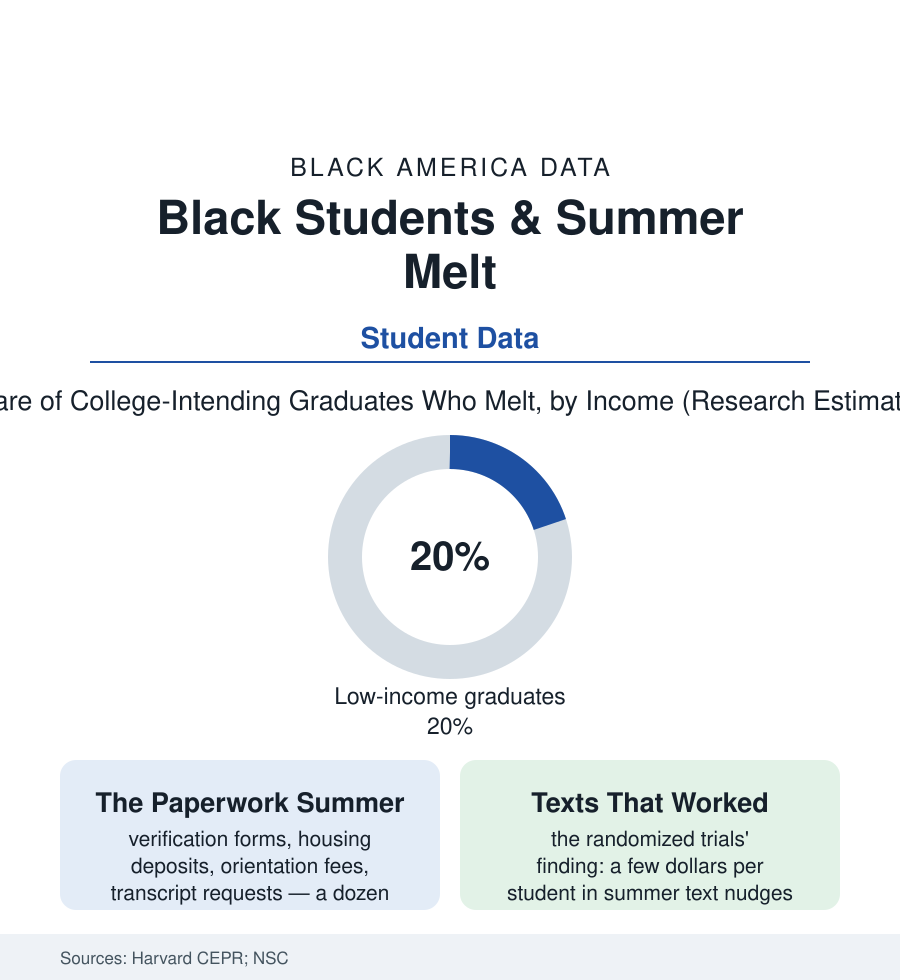

Black Education
Summer Melt: The Admitted Students Who Never Arrive
Up to a fifth of college-bound graduates — disproportionately Black and low-income — vanish between June's acceptance and September's enrollment. The summer melt file.

Every summer, a measurable share of the students this section has followed through every gate — tested, counseled, admitted, aid-packaged — simply never arrive: researchers call it summer melt, and the Harvard studies that named it estimate that between ten and twenty percent of college-intending graduates fail to enroll anywhere in the fall, with the rates running highest among low-income and Black graduates from under-resourced high schools. The diploma was earned. The acceptance was real. The student vanished into the summer. This article reads the melt file.
The Summer With No One on Duty
The melt's mechanics are the access file's machinery with the staff gone home: the FAFSA's verification process (the audit the aid system imposes on a disproportionate share of low-income filers — the paperwork demanded, in the studies' documentation, precisely when the school counselor who would shepherd it is off contract), the housing deposit and orientation fee deadlines (small sums on the bursar's calendar, insurmountable sums in the family budget's July), the final transcript request, the immunization record, the placement test registration, the aid letter's unread fine print (the loan-heavy package misread as a grant — the counseling file's debt trap armed at the summer's distance). Each step is small; the sequence is the sieve, and its racial geometry is the by-now-familiar compound: the students whose schools employed counselors with summer hours, whose districts ran bridge programs, whose families had an alumnus to call — melt at the research's low rates; the students of the counselor file's 400-to-1 buildings, first-generation, aid-verified, melt at multiples. The geography in the district studies is the map of the whole atlas in miniature: the big urban systems' melt rates against their suburbs', the same city's graduates sorted by the summer infrastructure their zip codes happened to fund — June's equal acceptances becoming September's unequal enrollments by nothing more dramatic than unanswered mail.
The melt also haunts the institutions' own ledgers, which is why the colleges joined the fight: the un-arrived admitted student is a lost tuition line and a distorted yield model, and the enrollment managers' data show the losses concentrating in exactly the first-generation, high-need admits the diversity statements celebrate — the modern enrollment office's summer-nudge operation exists because the bursar and the mission finally wanted the same students found. The community colleges' open doors melt hardest of all in the sector data — the student who intends the local campus needing no acceptance letter at all, only follow-through, and receiving the least follow-up of anyone in the file.
The Cheapest Fix in the File
What makes the melt file beloved of researchers is that the remedy is proven and nearly free: the randomized trials of summer outreach (the text-message campaigns of the Castleman and Page experiments — personalized nudges, deadline reminders, offers of counselor help by reply — cutting melt by several percentage points at a cost of a few dollars per student; the counselor-outreach districts' larger effects where a human being with a caseload list worked the phones) stand among the strongest cost-effectiveness results in the education literature — thousands of enrollments recovered for the price of a textbook. The institutional frontier has moved exactly where the data point: the districts and college-access nonprofits running summer bridge and melt caseloads as standard practice in the adopting cities' data, the colleges themselves (the enrollment offices' yield operations texting their admitted classes through the summer — the admissions file's arms race arriving, for once, on the student's side), and the near-peer models (recent graduates hired as summer advisors — the advising corps' summer extension, credible messengers at the kitchen table). The melt's remaining hardness is the verification-and-money core the nudges cannot text away: the aid audit's document hunt through households with no scanner and no margin, the deposit deadlines set by institutions that could waive them and mostly don't, the melt that is really a quiet financial recalculation the family makes alone in August and the system records, dishonestly, as a choice. The honest ledger keeps both: the students a text can save, and the students only money and paperwork reform can.
Reading the Melt Data
Summer melt is the education section's purest measurement of the difference between admission and access: a gate with no guard, no test, and no villain — just a twelve-week silence between the institutions that each assume the other is watching. The researchers count the missing freshmen every fall. They are findable, reachable, and savable at a few dollars a head; the file's only mystery is why the silence persists where the evidence is this cheap.
More in Black Education
Black Educational Attainment: High School Parity, the College Gap
About 89 percent of Black adults hold a high school diploma and one in four holds a bachelor's degree or higher — the attainment ladder, the college completion gap, and the generational trend.
Historically Black Colleges and Universities: Enrollment and Degrees
More than 100 HBCUs enroll roughly 290,000 students and award about one in six Black bachelor's degrees — an outsized share from a small sector. The federal education data.
Black College Enrollment: 2.4 Million Students
About 2.4 million Black students are enrolled in American colleges — nearly two-thirds of them women. The NCES enrollment data by sector, level, and trend.
Source: Harvard Center for Education Policy Research (Castleman & Page); National Student Clearinghouse; U.S. Department of Education college access research.